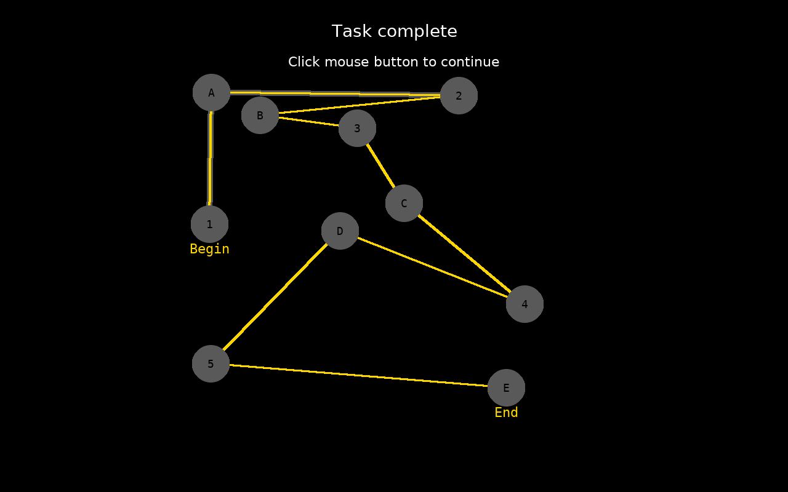
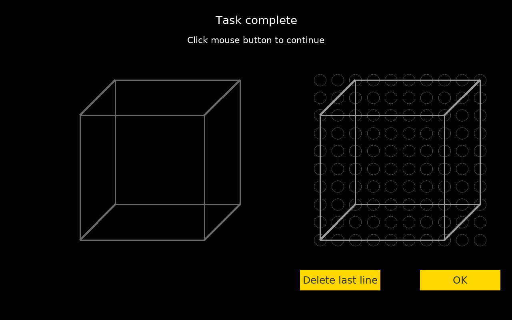

Page 1
Participant/Patient Code: 116This test intended for screening for mild cognitive impairment. It is not intended for self-diagnosis by untrained users. This test is inspired by tests included in commercial screening tests like the Montreal Cognitive Assessment and the Mini-mental state exam, but is developed independently.
Test began: Fri Nov 7 01:16:37 2025
Page 2
Fri Nov 7 01:16:48 2025
Points earned (out of 1): 1
Correct clicks: 9
Error clicks: 0
Time taken: 7.5 sec
Page 3
Fri Nov 7 01:17:31 2025
Points earned (out of 1): 1
Matched lines: 12
Missing lines : 0
Extra lines : 0
Time taken: 42.22 sec
Page 4
Fri Nov 7 01:18:14 2025
Points earned (out of 3): 3
Numbers placed correctly: 12
Hour hand placed correctly: 1
Minute hand placed correctly: 1
Time to place numbers: 27.69 sec
Time to place hands: 12.03 sec
Clock number placement:
| Number | Placed at | Correct |
|---|---|---|
| 1 | 1 | 1 |
| 2 | 2 | 1 |
| 3 | 3 | 1 |
| 4 | 4 | 1 |
| 5 | 5 | 1 |
| 6 | 6 | 1 |
| 7 | 7 | 1 |
| 8 | 8 | 1 |
| 9 | 9 | 1 |
| 10 | 10 | 1 |
| 11 | 11 | 1 |
| 12 | 12 | 1 |
Page 5
Page 6
Fri Nov 7 01:19:05 2025
| Learned word | Foil |
| BELIEF | BECAME |
| RESIGN | RESIST |
| GALLANT | GALLOP |
| SPARKLE | SPIDER |
| HANDLE | HARVEST |
Page 7
Fri Nov 7 01:19:17 2025
Points earned (out of 2): 2
Identify triangle: 1
Triangle response: triangle
Identify largest: 1
Largest response: square
Time taken: 5.34 sec
Page 8
Fri Nov 7 01:19:52 2025
Points earned (out of 3): 3
Correct responses: 7
Score for each:
| Image | Response | Correct |
|---|---|---|
| rhinoceros | rhinoceros | 1 |
| bear | bear | 1 |
| camel | camel | 1 |
| deer | deer | 1 |
| lion | lion | 1 |
| owl | owl | 1 |
| rabbit | rabbit | 1 |
Time taken: 25.16 sec
Page 9
Fri Nov 7 01:21:29 2025
Points earned (out of 2): 2
Forward number correct: 5 of 5
Forward recall Time: 6.25 sec
Recalled sequence:
| Stimulus | Response | Correct |
|---|---|---|
| 4 | 4 | 1 |
| 0 | 0 | 1 |
| 6 | 6 | 1 |
| 8 | 8 | 1 |
| 9 | 9 | 1 |
Backward number correct: 3 of 3
Backward recall Time: 2.94 sec
Recalled sequence:
| Stimulus | Response | Correct |
|---|---|---|
| 0 | 0 | 1 |
| 9 | 9 | 1 |
| 4 | 4 | 1 |
Page 10
Fri Nov 7 01:23:03 2025
Points earned (out of 1): 0
Correct responses: 26
Total Errors: 4
Hits: 10
Correct rejections: 16
Misses: 0
False alarms: 4
Mean response time: 620.5
Page 11
Fri Nov 7 01:23:25 2025
Points earned (out of 2): 2
Number correct: 6
Completion time: 20s
| Sentence | Truth | Response | Correct |
|---|---|---|---|
| When I wake up I open my eyes. | T | T | 1 |
| I hear with my nose. | F | F | 1 |
| You can see my teeth if I open my mouth. | T | T | 1 |
| I wear carrots on my feet. | F | F | 1 |
| There are seven days in a week. | T | T | 1 |
| I smell with my ears. | F | F | 1 |